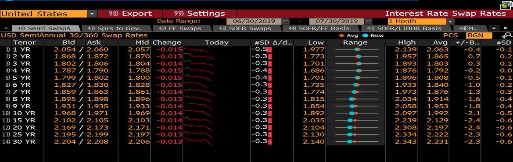
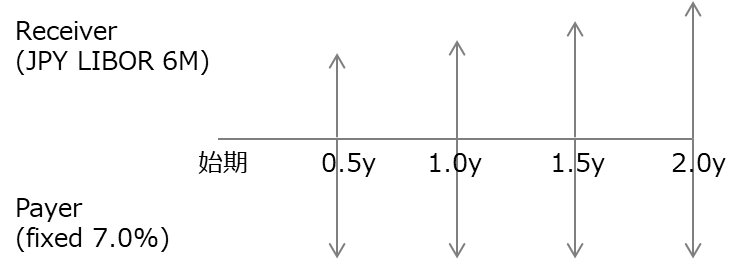
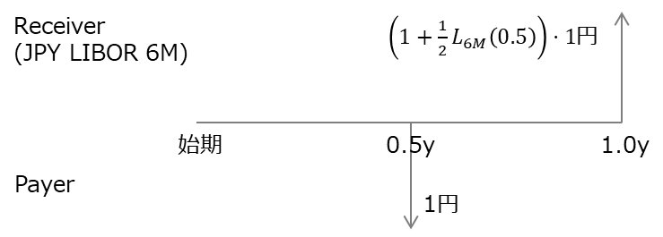
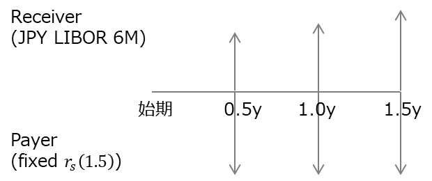

スワップの価格（すなわち現在価値、Present Value、PV、あるいはエクスポージャーと呼ばれる値）は情報端末には表示されない。概して、スワップ契約に含む各キャッシュフローの現在価値をディスカウントファクターから算出し、それらの合計から得ることができる。

画像元:https://quant.stackexchange.com/questions/46863/interpolating-the-swap-curve
本項においてCF=キャッシュフロー、DF=ディスカウントファクターを意味する
レートにはいくつかの区分が存在する（例えば「単利」と「複利」やday count fraction）。そのうち1つに「スポットレート」と「スワップレート」がある。概して次のように区別される。
以後、DF算定に用いるレートは1年複利スポットレートとする。
次のスワップ契約の現在価値を算出する。自分は(固定の)Payerとする。
■スワップ条件

■QUOTE rate
契約時点を$t=0$とし、時点$t[\text{年}]$におけるReceiver側CFを$C_R(t)$、DFを$D(t)$と定義する。Receiver側CFの現在価値合計$P_R$は次の通り算出できる。
\begin{eqnarray}
P_R=C_R(0.5)*D(0.5)+C_R(1.0)*D(1.0)+C_R(1.5)*D(1.5)+C_R(2.0)*D(2.0)
\end{eqnarray}
また$t[\textrm{年}]$後のターム$\sigma$のLIBORを$L_{\sigma}(t)$と書く（例:1年後の6M LIBORは$L_{6M}(1.0)$）。$C_R$は次のように得られる。
\begin{eqnarray}
C_R(t)=\frac{1}{2}L_{6M}(t)\nu
\end{eqnarray}
これを使って$P_R$は次のように変形できる。
\begin{eqnarray}
P_R=\nu\left[ \frac{1}{2}L_{6M}(0)*D(0.5)+\frac{1}{2}L_{6M}(0.5)*D(1.0)+\frac{1}{2}L_{6M}(1.0)*D(1.5)+\frac{1}{2}L_{6M}(1.5)*D(2.0) \right]
\end{eqnarray}
given条件からそれぞれの値を求める。
■$L_{6M}(0.5)$,$D(0.5)$,$D(1.0)$
\begin{eqnarray}
\nu &=& 1,000,000,000 \\
L_{6M}(0) &=& 0.07 \\
L_{1Y}(0) &=& 0.072 \\
D(0.5) &\equiv& \frac{1}{1+\frac{1}{2}\cdot\frac{365}{360}\cdot L_{6M}(0)} = 0.96573 \\
D(1.0) &\equiv& \frac{1}{1+\frac{1}{2}\cdot\frac{365}{360}\cdot L_{1Y}(0)} = 0.93197
\end{eqnarray}
■$L(0.5,0.5)$
時点$0.5$において$1$円のインターバンク資金を貸すと、リスクフリーで時点$1.0$に$L(0.5,0.5)$円が得られる条件を課す。すなわち、時点$0$から見てこの2つのCFの現在価値は一致する。

\begin{eqnarray}
1\cdot D(0.5) &=& 1\cdot \left(1+\frac{1}{2}L_{6M}(0.5)\right)D(1.0) \\
\Rightarrow L_{6M}(0.5) &=& 2\left(\frac{D(0.5)}{D(1.0)}-1\right) = 0.07245
\end{eqnarray}
同様に次の式が得られる。
\begin{eqnarray}
L_{6M}(1.0) &=& 2\left(\frac{D(1.0)}{D(1.5)}-1\right) \\
L_{6M}(1.5) &=& 2\left(\frac{D(1.5)}{D(2.0)}-1\right)
\end{eqnarray}
一般には次のように書ける
\begin{eqnarray}
L_{6M}(t) &=& 2\left(\frac{D(t)}{D(t+0.5)}-1\right)
\end{eqnarray}
■$D(1.5)$
本件スワップと同条件で想定元本1円、期間1.5年のスワップ契約を考える。スワップレートを$r_s(1.5)$とするとCF図は次のようになる。

受払のCFを現在価値にディスカウントするとき、No-Arbitrage条件から次式が得られる。
\begin{eqnarray}
\frac{1}{2}r_s(1.5)D(0.5)+\frac{1}{2}r_s(1.5)D(1.0)+\frac{1}{2}r_s(1.5)D(1.5) &=& \frac{1}{2}L_{6M}(0)D(0.5)+\frac{1}{2}L_{6M}(0.5)D(1.0)+\frac{1}{2}L_{6M}(1.0)D(1.5) \\
\Rightarrow \frac{1}{2}r_s(1.5)\left[D(0.5)+D(1.0)+D(1.5)\right] &=& \left(\frac{D(0)}{D(0.5)}-1\right)D(0.5)+\left(\frac{D(0.5)}{D(1.0)}-1\right)D(1.0)+\left(\frac{D(1.0)}{D(1.5)}-1\right)D(1.5) \\
&=& D(0)-D(1.5) \\
\Rightarrow \left[1+\frac{1}{2}r_s(1.5) \right]D(1.5)&=& D(0) +\frac{1}{2}r_s(1.5)D(0.5) +\frac{1}{2}r_s(1.5)D(1.0) \\
\Rightarrow D(1.5)&=& \frac{D(0) +\frac{1}{2}r_s(1.5)D(0.5) +\frac{1}{2}r_s(1.5)D(1.0)}{1+\frac{1}{2}r_s(1.5)}
\end{eqnarray}
$D(0)=1$は自明。$r_s(1.5)$はunknownである。$r_s(1.5)$の求め方は
以上